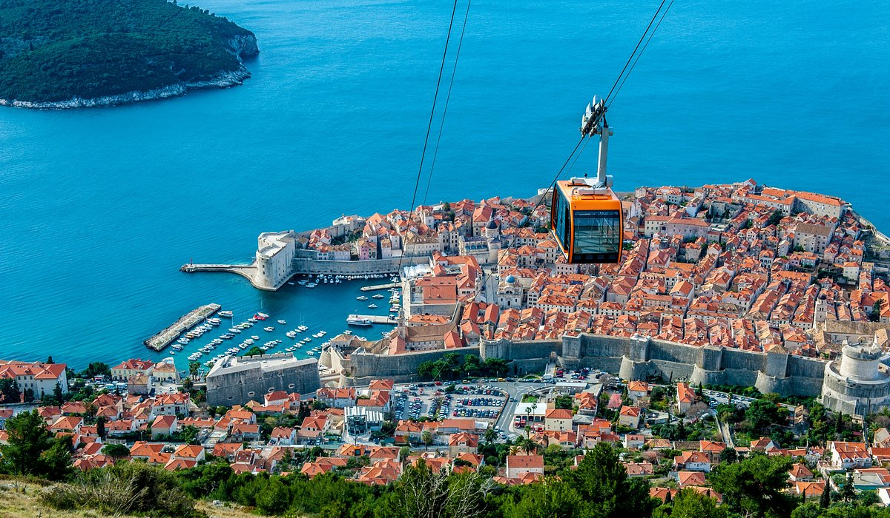

Top Tourist Spots in Croatia
Dubrovnik 
Dubrovnik's Old Town is a UNESCO World Heritage site for a reason. Its limestone streets, baroque buildings, and the bustling Stradun are alive with history and beauty.
Zagreb

Zagreb is the most important transport hub in Croatia where Central Europe, the Mediterranean and Southeast Europe meet, making the Zagreb area the center of the road, rail and air networks of Croatia. It is a city known for its diverse economy, high quality of living, museums, sporting, and entertainment events.